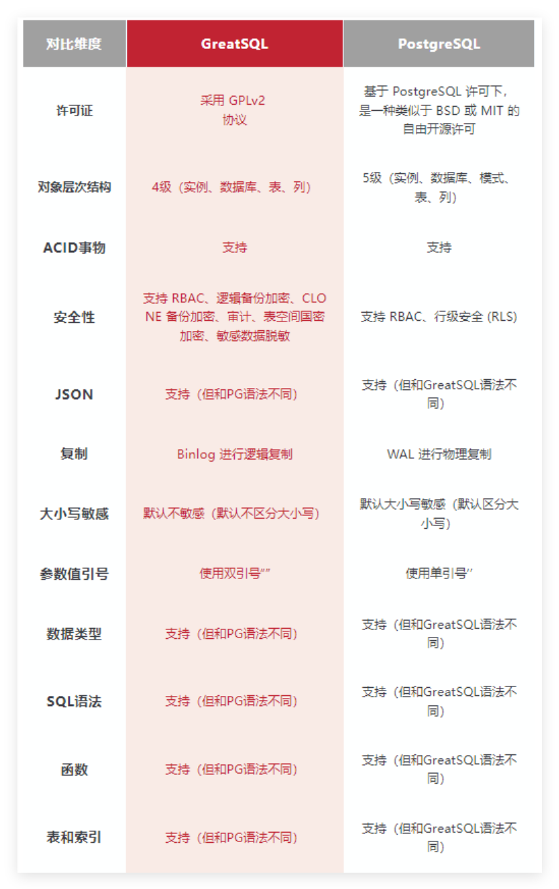
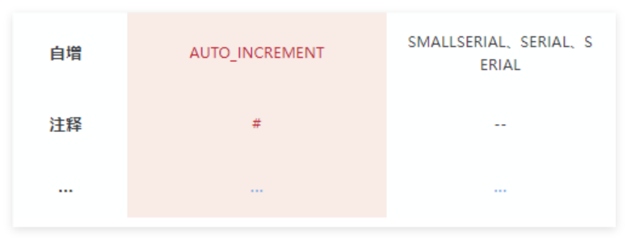
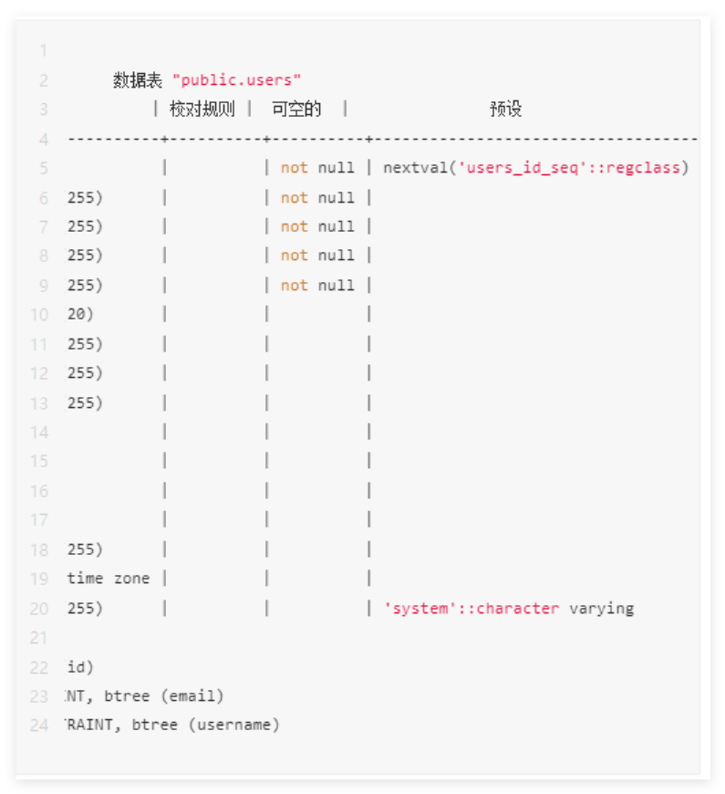
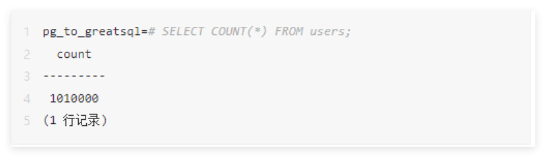
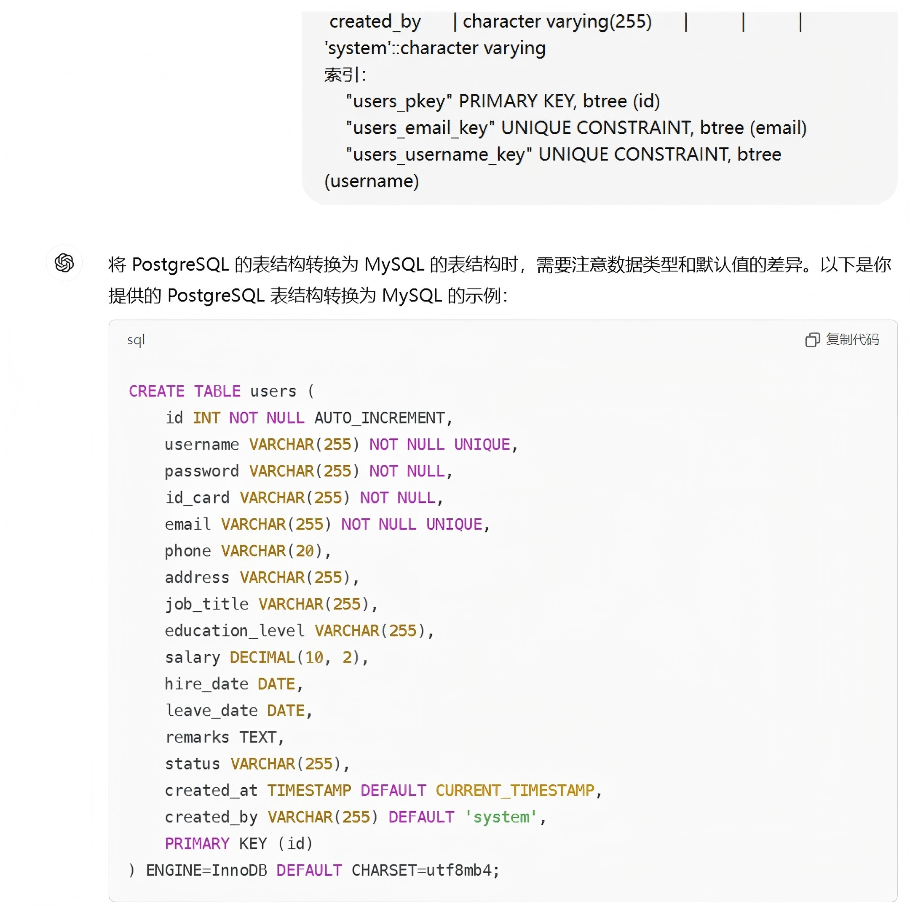
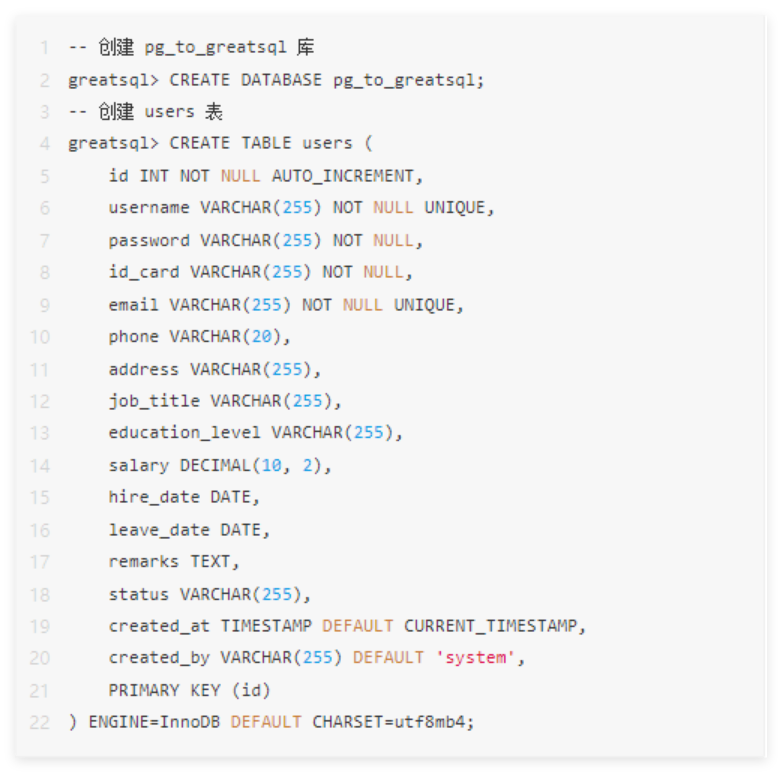
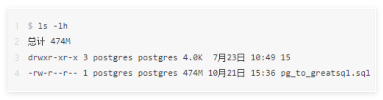
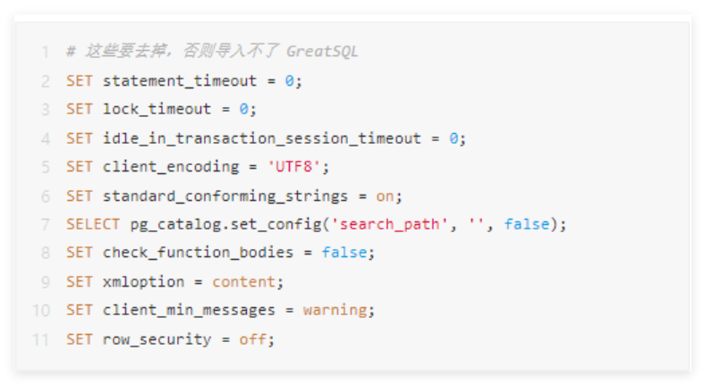
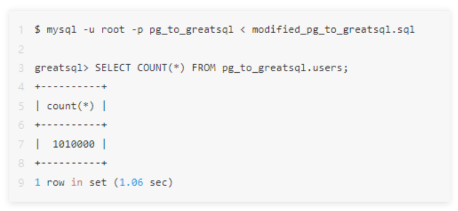
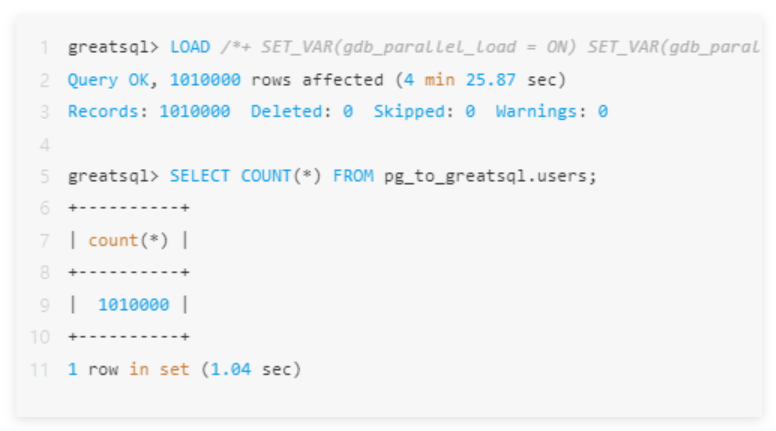

数据迁移丨如何用AI完成 PostgreSQL 到 GreatSQL 迁移？附全干货解析~
本文将介绍如何从PostgreSQL到GreatSQL的数据迁移，并运用 AI 协助迁移更加方便。迁移的方式有很多，
例如：
pg_dump：导出SQL文件，修改后导入 GreatSQL 数据库；
COPY：导出txt文本文件，导入 GreatSQL 数据库；
pg2mysql：从 PostgreSQL 迁移到 MySQL/GreatSQL 工具；
GreatDTS：商业的异构数据库迁移工具。
本文将介绍 pg_dump 和 COPY 两种方法迁移。
PostgreSQL和GreatSQL区别
PostgreSQL
PostgreSQL是一款开源的对象关系型数据库管理系统（ORDBMS）。它的特点是强调扩展性、数据完整性
和高级特性。PostgreSQL由社区维护和开发，具有出色的可定制性，可以适应各类不同的应用场景。它支持
复杂的数据类型、JSON 数据存储、空间数据处理和全文搜索等特性。
GreatSQL
GreatSQL 数据库是一款开源免费数据库，可在普通硬件上满足金融级应用场景，具有高可用、高性能、
高兼容、高安全等特性，可作为 MySQL 或 Percona Server for MySQL 的理想可选替换。
详细区别


在迁移过程中，要注意两款数据库产品的差异。
迁移优势
迁移到 GreatSQL 有以下优势：
高可用
针对 MGR 做了大量改进和提升，拥有地理标签、仲裁节点、读写动态VIP、快速单主模式、智能选主等特性，
并针对流控算法、事务认证队列清理算法、节点加入&退出机制、recovery机制等多个 MGR 底层工作机制
算法进行深度优化，进一步提升优化了 MGR 的高可用保障及性能稳定性。
高性能
相对 MySQL 及 Percona Server For MySQL，性能表现更稳定优异，支持 Rapid 引擎、事务无锁化、
并行LOAD DATA、异步删除大表、线程池、非阻塞式DDL、NUMA亲和调度优化等特性，在 TPC-C测试
中相对 MySQL 性能提升超过 30%，在 TPC-H 测试中的性能表现是 MySQL 的十几倍甚至上百倍。
高兼容
GreatSQL 实现 100% 完全兼容 MySQL 及 Percona Server For MySQL 语法，支持大多数常见Oracle语法，
包括数据类型兼容、函数兼容、SQL 语法兼容、存储程序兼容等众多兼容扩展用法。
高安全
GreatSQL 支持逻辑备份加密、CLONE 备份加密、审计、表空间国密加密、敏感数据脱敏等多个安全提升特性
，进一步保障业务数据安全，更适用于金融级应用场景。
迁移准备
业务需求分析
评估哪些业务需要迁移，以及迁移的影响。先明确迁移范围，知道哪些业务系统和服务会受到影响，
根据优先级进行迁移。了解数据库直接交互的应用程序、服务、脚本等，分析这些依赖关系，有助于制定
迁移计划和减少对业务的影响。同时，也要评估迁移带来的风险，如数据丢失、数据同步延迟、业务中断等。
兼容评估
评估 PostgreSQL 和 GreatSQL 之间的兼容性，包括语法、功能、数据类型、索引等。PostgreSQL 和
GreatSQL 在 SQL 语法和功能上存在一些差异，应特别注意。
迁移之前，一定要先了解PostgreSQL和GreatSQL之间的区别：
PostgreSQL：https://postgresql.p2hp.com/index.html
GreatSQL：https://greatsql.cn/
备份和恢复
在迁移前，确保 PostgreSQL 数据库的备份和恢复机制完善。例如做一次全量备份，在迁移之前，首先应进行
完整的数据库备份（例如使用 pg_dump），以确保迁移过程中遇到问题时可以快速恢复。可以选择基于文件
系统的快照备份或基于逻辑备份的 pg_dump，并将备份数据存储在安全位置。
测试环境搭建
安装 PostgreSQL 并生成测试数据
PostgreSQL 版本为 15.8
$ psql --version
psql (PostgreSQL) 15.8 (Debian 15.8-0+deb12u1)迁移库 pg_to_greatsql 库下的 users 表

该 user 表的数据量为 1010000 行

安装&迁移到GreatSQL数据库
安装 GreatSQL 数据库
推荐安装 GreatSQL 最新版本：
https://greatsql.cn/docs/8.0.32-26/4-install-guide/1-install-prepare.html
迁移到 GreatSQL 数据库
表结构迁移：此时可以使用 AI 来帮助迁移，例如使用DeepSeek 或 ChatGPT 将 PostgreSQL 数据库表
结构转换为 GreatSQL 数据库的表结构。

AI 生成完成后，需要自行检查下是否正确！
自增字段：id 字段使用 AUTO_INCREMENT 代替 nextval。
数据类型：PostgreSQL 的 character varying 对应 GreatSQL 的 VARCHAR，numeric 对应
DECIMAL，text 对应 TEXT，timestamp without time zone 对应 TIMESTAMP。
默认值：对于 created_at 字段，使用 DEFAULT CURRENT_TIMESTAMP 设置默认值，created_by 字段
的默认值保持不变。
字符集：推荐使用 utf8mb4 字符集，以支持更广泛的字符。
在 GreatSQL 中创建对应库，并执行由 AI 生成的 SQL 建表语句：

数据迁移
方法一：pg_dump 备份
在 PostgreSQL 执行pg_dump备份
$ pg_dump --data-only --inserts --column-inserts -U postgres -d pg_to_greatsql > ./pg_to_greatsql.sql
data-only：只导出数据，不包括数据库对象的定义（如表结构、索引等）。
inserts：以 SQL INSERT语句的形式导出数据，而不是默认的自定义格式。这样生成的备份文件更易于
阅读和编辑。
column-inserts：使用带有列名的 INSERT语句形式，即INSERT INTO table_name (column1, column2,...)VALUES (value1, value2,...);这种方式在处理包含特殊字符的数据时可能更稳定，并且可以更精确地控制插入
的列。
此时会生成 pg_to_greatsql.sql 文件：

去除无用信息
此时还不能将这份 SQL 文件直接导入 GreatSQL ，根据上面介绍，两款数据库的对象层次结构不同，
需打开pg_to_greatsql.sql 文件：
-- 语句中有 public. 需要去除
INSERT INTO public.users (id, username, password, id_card, email, phone, address, job_title, education_level, salary, hire_date, leave_date, remarks, status, created_at, created_by) VALUES (1010000, '527d66e0a6cdb128d44fc45', '10cccade4c7c35d553cd23e48b5facd1', '435078200404227108', 'b8a5b05af990ff4bdc9ccdc@qq.com', '18059437765', '讗慹簪瞠珒鸚鼜瘔狹覰', 'C++', '博士', 23592.00, '2020-07-04', '2020-12-29', '0e3801d3e64be7c38d93cb5', '离职', '2023-06-20 22:42:39', 'system');可以看到 INSERT 语句表前面有 public. 关键词，需要将这个关键词去掉：
$ sed 's/INSERT INTO public\./INSERT INTO /g' pg_to_greatsql.sql > modified_pg_to_greatsql.sql
同时还有一些关于 PostgreSQL 参数的设置，需要去掉：

my.cnf 参数可以选择 GreatSQL 推荐的参数模板设置：
https://greatsql.cn/docs/8.0.32-26/3-quick-start/3-4-quick-start-with-cnf.html
当然，有些参数，如例子中 lock_timeout在 PostgreSQL 中是代表锁超时，在 GreatSQL 中锁超时参数是
lock_wait_timeout，若有需要可自行查找GreatSQL 对应的参数。
pg_dump 导入 GreatSQL
接下来就可以直接将这份 SQL 文件导入到 GreatSQL 数据库中：

数据量如果很大，该方法导入会特别慢。
方法二：COPY 导出数据
使用 INSERT 的方法导入会比较慢，此时可以用 COPY 的方法导出表数据，再配合 GreatSQL 的并行 Load
Data 特性，可以使迁移更加迅速。
使用 COPY 导出数据：
pg_to_greatsql=# COPY users TO '/var/lib/postgresql/output_file.txt' WITH (FORMAT TEXT);
COPY 1010000COPY 导入 GreatSQL
使用 GreatSQL 中的并行 Load Data 特性：
https://greatsql.cn/docs/8.0.32-26/5-enhance/5-1-highperf-parallel-load.html

到此迁移完成。
通过其他迁移工具迁移的方法，
大家可自行多多挖掘哦~
Enjoy GreatSQL :)